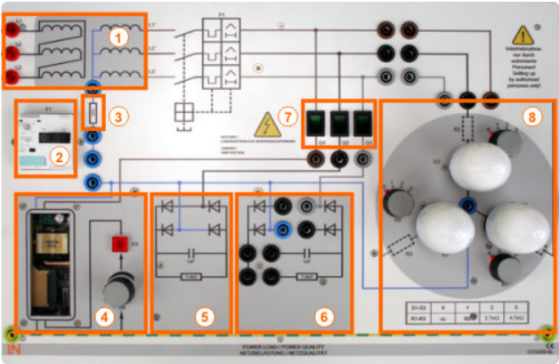
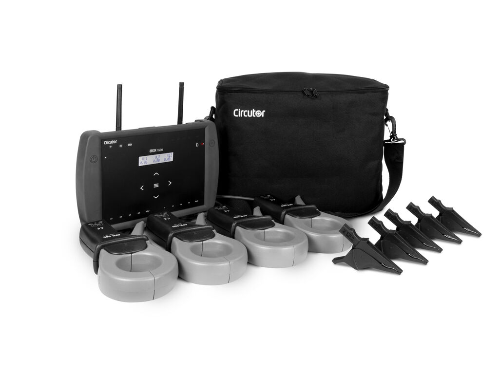
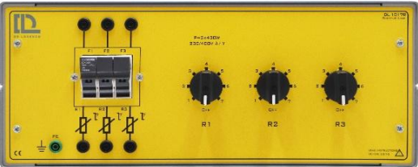
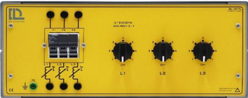
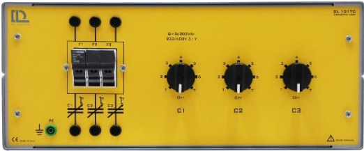

Calidad del Suministro Eléctrico
Evaluación de desequilibrios en cargas trifásicas y análisis de armónicos en un estudio de grabación musical.
01 Resumen Ejecutivo
Estudio profesional con consola analógica, previos de válvulas y sistemas Mac. Se requiere evaluar la estabilidad de la red ante ruidos y transitorios.
Cargas Predominantes
- Equipo de audio analógico y válvulas.
- Fuentes conmutadas (SMPS) de ordenadores.
- Iluminación LED y climatización silenciosa.
Preocupaciones
- Ruido de red y bucles de masa.
- Armónicos afectando equipos sensibles.
02 Equipamiento de Laboratorio
Lucas-Nülle CO3209-8L Trainer
- 1.Aislamiento: Transformador 1:1 con indicadores de seguridad.
- 2. Protección F1: Calibrado entre 0,11 - 0,16 A.
- 3. Resistencia de medición para corriente de conductor neutro.
- 4. Carga 1: Fuente de alimentación conmutada con resistencia de carga.
- 5. Carga 2: Rectificador en puente.
- 6. Carga 3: Rectificador de media onda/en puente.
- 7. Interruptores de Q1 a Q3 para cargas 1-3.
- 8. Luces en conexión en estrella con resistencias adicionales.
Banco III, cuya función es emular de forma segura distintos escenarios de distribución eléctrica. Aislado de la red mediante un transformador 1:1, permite simular cargas lineales y no lineales, así como desequilibrios de fase. Con las siguientes especificaciones:

PicoScope 2204A Osciloscopio
- 2 canales analógicos (limitación a tener en cuenta para trifásica).
- Ancho de banda: 10 MHz.
- Muestreo en tiempo real: 100 MS/s.
- Resolución vertical: 8 bits.
- Memoria de captura: 8 kS por canal.
- Generador de señales integrado (AWG)
- Trigger avanzado (nivel, flanco, ventana, pulso)

Circutor MyeBox 1500 Portable Analizer
- 4 entradas de medida de tensión (U1, U2, U3, Un) y entradas de medida de corriente (I1, I2, I3, In)
- Medida de los principales parámetros eléctricos.
- Energía consumida y generada.
- Medida en verdadero valor eficaz (TRMS).
- Registro de transitorios (como el flicker) y su forma de onda
- Registro de forma de onda cada periodo de registro
Analizador configurable mediante app, realiza análisis. Sus principales aplicaciones son:

Cargas de Lorenzo DL1017Lineal Charges
- Resistiva: compuesta por tres resistencias, con posibilidad de conexión en estrella, en triángulo y en paralelo, controlado por tres interruptores, variable en siete pasos cada uno.
Energía máxima en la conexión monofásica o trifásica: 1200 W.
Voltaje nominal: 380/220 V Y/D.
Voltaje nominal en monofásica: 220 V
- Inductiva: compuesta por tres inductancias, con posibilidad de conexión en estrella, en triángulo y en paralelo, controlada por tres interruptores con siete pasos cada uno.
Energía reactiva máxima en la conexión monofásica o trifásica: 900 VAr.
Voltaje nominal: 380/220 V Y/D.
Voltaje nominal en monofásica: 220 V
- Capacitiva: compuesto por 3 baterías de condensadores, con posibilidad de conexión en estrella, triángulo y paralelo, controladas por 3 interruptores de siete pasos cada uno.
Energía reactiva máx. en conexión monofásica o trifásica: 825 Var.
Tensión nominal: 380/220 V Y/D.
Tensión nominal monofásica: 220 V
Tres bancos trifásicos independientes — resistivo (DL 1017 R), inductivo (DL 1017 L) y capacitivo (DL 1017 C) — con escalones conmutables y conexión en estrella o triángulo.



03 Reconocimiento de la Instalación
Análisis de Tensiones Fase a Fase
Se comienza con un ensayo conectando las bombillas LED atenuables del estudio, ajustando el entrenador para establecer una carga trifásica equilibrada en estrella.
● Fase R (Canal A): 262.6 V
● Fase S (Canal B): 262.5 V
● Fase T (Canal C): 261.3 V
- 1. Caídas de tensión distintas: Por diferencias constructivas entre bombillas.
- 2. Desequilibrios aguas arriba: Debido a la conexión de otros usuarios.
- 3. Precisión de las ondas: Tolerancias de sondas y presencia de ruido.
- 4. Cargas no lineales: Los diodos de los LEDs generan armónicos.
Existen diferencias en una red real debido a:
Sin embargo, la diferencia entre fases es inferior al 0.5%, lo que indica un sistema muy bien equilibrado.

Espectros Armónicos de la tensión Equilibrio
Para comprobar el espectro armónico, se analizan los resultados tras aplicar la transformada de Fourier.
- Amplitudes de pico fundamentales: ● Canal A: 50.35 dB => 329.23 V
● Canal B: 50.35 dB => 329.23 V
● Canal C: 50.31 dB => 327.72 V
- Tasas de distorsión armónica (THD): ● Canal A: 1.5752 % | ● Canal B: 1.6545 % | ● Canal C: 1.6049 %
La normativa UNE-EN 50160 establece un límite del 8%, cumpliéndose ampliamente.

Análisis de Corriente Componente Fundamental
La onda de corriente registrada muestra perturbaciones de alta frecuencia. Al analizar la señal en el dominio de la frecuencia, se observa una distorsión más acusada que en la tensión debido a la naturaleza de las cargas.
● Valor Eficaz (RMS): 18.93 mA
● Amplitud Fundamental (50 Hz): -33.26 dB → 21.73 mA
● THD de Corriente: 5.6289 %
- Distorsión Armónica: La carga distorsiona la corriente de forma significativa, destacando la presencia de los armónicos 3º (150 Hz) y 7º (350 Hz).
- Evaluación de Impacto: Aunque la distorsión en corriente es notable, la tensión de alimentación no se ve fuertemente afectada, por lo que no supone un riesgo inmediato para la estabilidad de la instalación.


04 Desequilibrio y Cargas No Lineales
Ensayo de activación sucesiva de cargas no lineales (Q1 a Q3): rectificador de media onda, puente de onda completa con filtro y fuente conmutada (SMPS). Se analiza el impacto de estas cargas en la distorsión de la red.
Ficha de Reconocimiento: Fuente Conmutada (SMPS)
Análisis Espectral: Amplitud fundamental (-29.68 dB) con una tasa de distorsión armónica THD: 36.49%.
| Armónico | Frecuencia | Amplitud | IHD (%) |
|---|---|---|---|
| 3º | 150 Hz | -40.72 dB | 28.05% |
| 5º | 250 Hz | -45.72 dB | 15.77% |
| 7º | 350 Hz | -46.61 dB | 14.23% |
| 9º | 450 Hz | -57.65 dB | 3.99% |
| 11º | 550 Hz | -57.65 dB | 3.99% |


Hallazgo Crítico: Triple Harmonics
El espectro está dominado por armónicos impares. El 3º armónico es el responsable directo de los zumbidos audibles reportados. Además, los armónicos 3º y 9º no se cancelan en el neutro, sino que se suman en fase, provocando una sobrecarga térmica latente en los conductores.
Ficha de Reconocimiento: Rectificador de Onda Completa
Comportamiento: Pulsos estrechos y simétricos. Esta carga presenta un consumo significativamente superior a la SMPS debido a la elevada magnitud de sus picos de corriente.
Análisis Espectral: Fundamental (-24.69 dB) con una distorsión crítica THD: 59.02%.
| Armónico | Frecuencia | Amplitud | IHD (%) |
|---|---|---|---|
| 3º | 150 Hz | -30.09 dB | 53.70% |
| 5º | 250 Hz | -41.60 dB | 14.27% |
| 7º | 350 Hz | -40.20 dB | 16.76% |
| 9º | 450 Hz | -44.74 dB | 9.94% |
| 11º | 550 Hz | -57.65 dB | 2.24% |


Impacto en la Instalación y Audio
La distorsión del 3º armónico (53.7%) es extremadamente severa, con potencial para provocar un desplazamiento del neutro. Además, los elevados pulsos de corriente generan una alta inducción electromagnética; si los cables de audio se encuentran próximos a estos conductores, el ruido inducido degradará irreversiblemente la calidad de la señal.
Ficha de Reconocimiento: Rectificador de Media Onda
Análisis Matemático: Debido a la ausencia de simetría de media onda (solo se presenta un semiciclo), la serie de Fourier genera armónicos pares y una componente de continua no nula.
Análisis Espectral: Fundamental (-28.43 dB) con un THD: 37.90%.
| Armónico | Frecuencia | Amplitud | IHD (%) |
|---|---|---|---|
| 2º (Par) | 100 Hz | -31.37 dB | 71.28% |
| 3º (Impar) | 150 Hz | -36.22 dB | 40.78% |
| 4º (Par) | 200 Hz | -46.27 dB | 12.82% |
| 5º (Impar) | 250 Hz | -48.00 dB | 10.50% |
| 6º (Par) | 300 Hz | -44.54 dB | 15.65% |


Riesgo Crítico: Saturación del Núcleo
La inyección de la componente continua (-22.69 mA) en el transformador de aislamiento provoca la magnetización y saturación del núcleo de hierro. Las consecuencias directas detectadas son el sobrecalentamiento del equipo y un zumbido físico originado por la vibración de las chapas del transformador, lo cual compromete la vida útil de los componentes y el ruido de fondo del estudio.
05 Análisis de la Red del Laboratorio
Evaluación comparativa entre la línea general del laboratorio y la salida del entrenador para identificar la causa raíz de las anomalías reportadas por el cliente.
Comparativa: Tensión de Red vs. Entrenador
Se analiza la Fase R en configuración limpia (sin desequilibrios simulados). La señal de red presenta un achatamiento en los picos, típico de redes saturadas por cargas no lineales.
Actúa como un filtro paso bajo que bloquea armónicos hacia la red, pero genera una elevación de tensión del 13.5% sobre el valor nominal. Esta sobretensión es crítica para la vida útil de los equipos analógicos del estudio.

Hallazgos en el Espectro de Frecuencia
- Armónicos Impares (150, 250, 350 Hz): Predominancia clara que se infiltra en las fuentes de alimentación, traduciéndose en zumbidos audibles.
- Ruido EMI (20.5 kHz): Detección de un pico de alta frecuencia compatible con la conmutación de variadores (climatización).
- Riesgo Digital: Este ruido a 20.5 kHz amenaza a los conversores A/D, pudiendo causar aliasing y errores de sincronización (jitter).
THD-U: 1.4697% (Cumple UNE-EN 50160 < 8%).
Nota Pericial: Aunque legalmente apta, la red es técnicamente inaceptable para audio profesional debido a la magnitud de tensión (>10% del nominal).

Conclusión del Diagnóstico
El estudio opera en un entorno de vulnerabilidad eléctrica extrema. La combinación de deformación armónica, una sobretensión peligrosa de 261 V y ruido electromagnético de alta frecuencia compromete tanto la integridad del hardware como la fidelidad de las grabaciones digitales.
06 Propuestas de Mejora
- Regulación del Suministro: Ajuste de las tomas (taps) del transformador para mitigar la sobretensión en el secundario. Como alternativa técnica superior, se recomienda un estabilizador de tensión de precisión para garantizar un nominal constante de 230 V.
- Acondicionamiento de Señal y Respaldo: Implementación de un SAI (UPS) de doble conversión para eliminar armónicos, ruido de alta frecuencia y fluctuaciones. Es crítico integrar filtros EMI/RFI en los racks de audio para proteger los conversores A/D del pico de alta frecuencia detectado.
- Saneamiento de Cargas No Lineales: Eliminación de equipos con rectificación de media onda (adaptadores AC/AC obsoletos). Esta medida suprime la componente de continua que provoca la saturación del núcleo en los transformadores de audio.